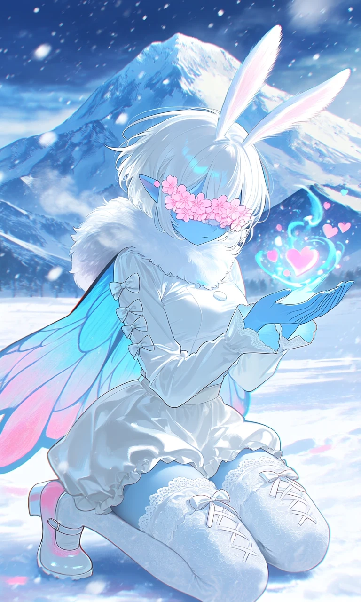
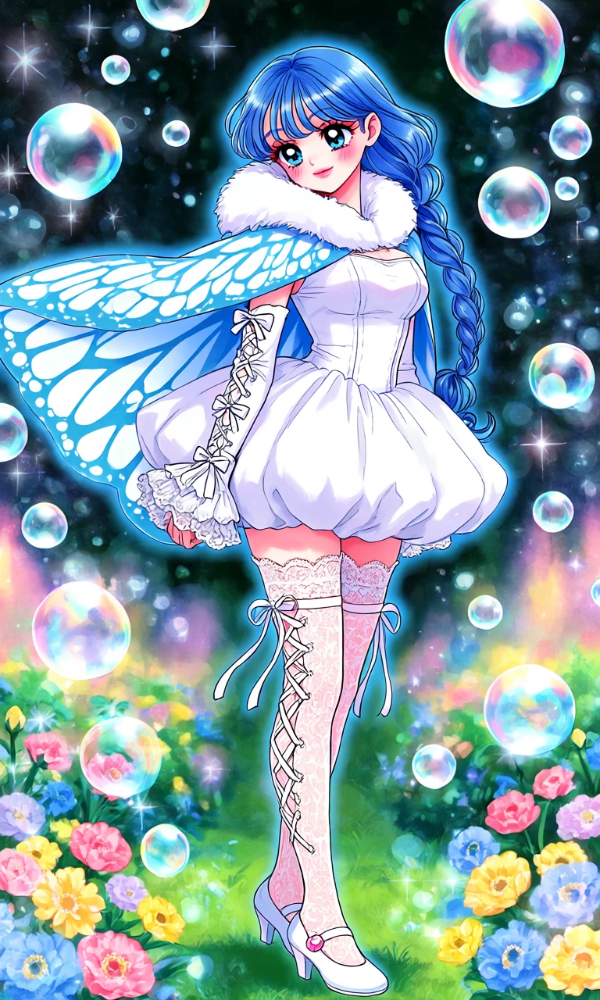

Cocoon Waltz

Outfit Prompt
She is wearing a white fur collar all around her neck, a cape that has has a light blue and white butterfly wings pattern that slightly flow in the wind. She has tight white sleeves with white bows and white lace up with ruffled lace ends.
It shows her whole body. She is wearing a white tight blouse and a short puffy white skirt. She is wearing very high, very detailed lace thigh high stockings with a white ribbon lace up on the sides of the sides that show her skin with a pretty bow tied at the top on the woman's thigh and lace ruffle trim. She is wearing white mary janes with a little pink accents on it.
Outfit Examples



